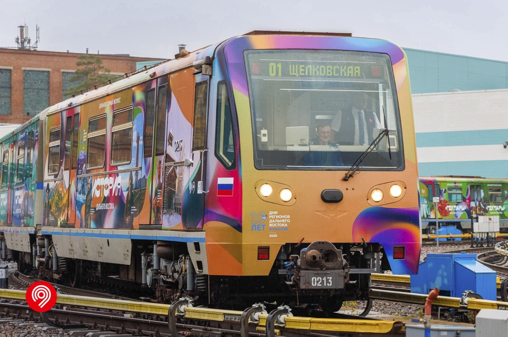
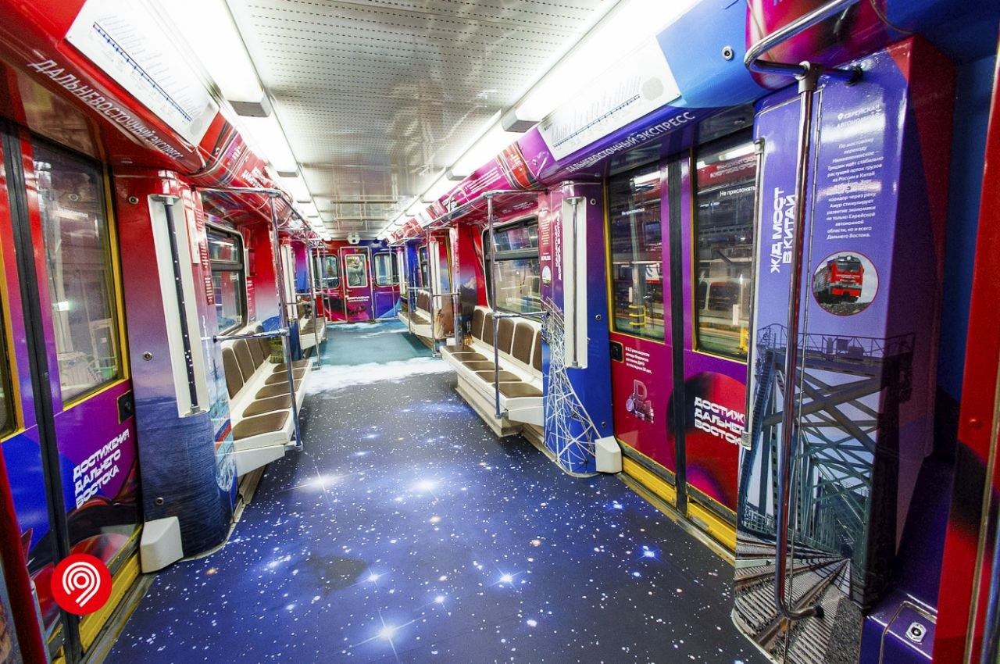

81-740.4 «Русич» №0212-0213
Вагоны модели 81-740.4 «Русич» с бортовыми номерами 0212, 0767, 0768, 0769 и 0213. Приписаны к депо ТЧ-3 «Измайлово».
С 5 ноября 2026 года состав эксплуатируется в тематическом оформлении «Дальневосточный экспресс», посвящённом регионам Дальнего Востока.
Общая информация
| Параметр | Значение |
|---|---|
| Город | Москва 🇷🇺 |
| Депо/Парк | ТЧ-3 «Измайлово» |
| Модель | 81-740.4 / 81-741.4 «Русич» |
| Построен | 02.2010 |
| Начало работы | 03.2010 |
| Текущее состояние | Эксплуатируется |
| Назначение | Пассажирский |
| Текущее брендирование | «Дальневосточный экспресс-9» (с 05.11.2026) |
Составность
0212 — 0767 — 0768 — 0769 — 0213
5 вагонов
История
Поступление в метрополитен
Состав поступил через гейт ТЧ-2 «Сокол» (в составе 0212-0767-0768-0769-0213).
Поступление в депо
Состав поступил в депо приписки ТЧ-3 «Измайлово».
«Дальневосточный экспресс-4»
Первый опыт тематического оформления на данном составе.
«Добрый поезд»
Новогоднее оформление состава.
«Дальневосточный экспресс-9»
Состав получил новое оформление, посвящённое 11 регионам Дальнего Востока.
Фотогалерея

📌 ТЧ-22 «Аминьевское».
Общий вид тематического состава.

📌 Вагон в составе.
Салон тематического поезда.
Нажмите на фото для увеличения
«Дальневосточный экспресс» уже в девятый раз радует пассажиров метро, знакомя их с удивительной природой и культурой регионов Дальнего Востока.